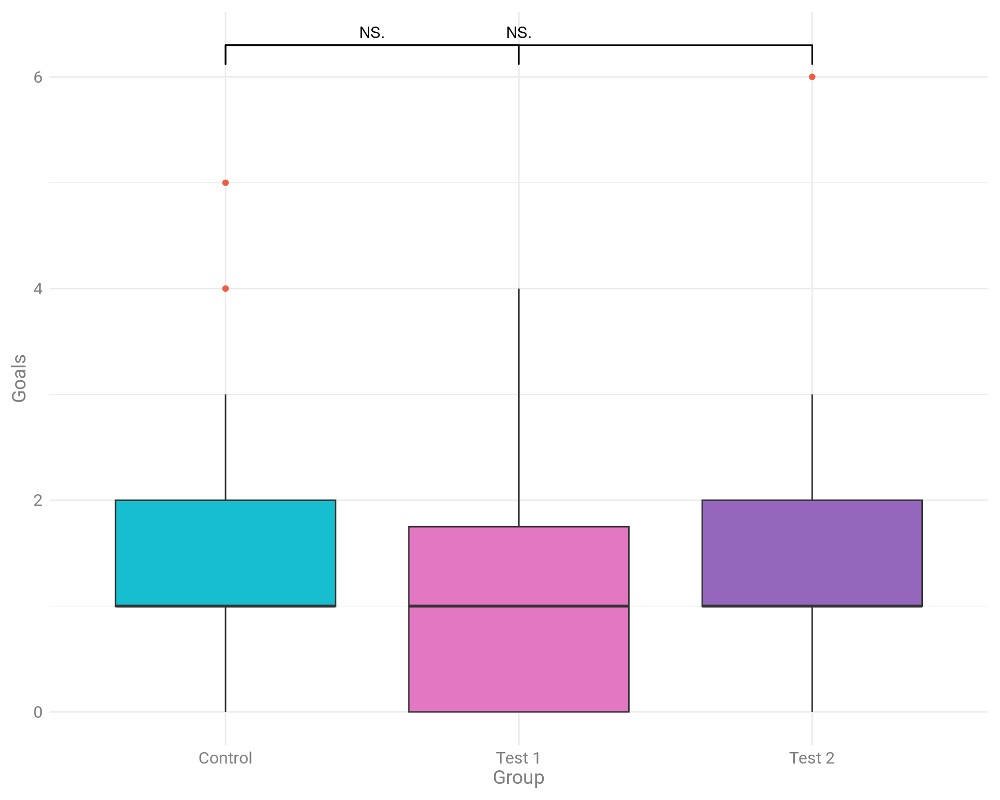

Загрузка библиотек
# обработка данных
library(data.table)
library(dplyr)
# вывод интерактивных таблиц
library(DT)
# графика
library(ggplot2)
# статистика на графиках
library(ggsignif)
# статистика оценок
library(dabestr)Часть 2. Статистика оценок или почему не надо испольлзовать только метод проверки значимости нулевой гипотезы, основанный на p-value.
Напомню, что в первой части статьи мы прошли шаги:
Данные собраны. Остался последний шаг — провести post-hoc тест и оценить эффективность обучения стратегии на выбранной микроцели.
Подписывайтесь на мой ТГ-канал DDM & Ads
Проверка значимости нулевой гипотезы (Null Hypothesis Significance Testing, NHST) часто применяется в маркетинговых исследованиях, но этот метод ограничен. Он отвечает только на вопрос: «Есть ли эффект?». В экономиках и социальных науках вместо NHST используют оценочные методы. Например, указывают: «средний доход составил 50 000₽ ± 1500₽».
Проблема с интерпретацией p-value. p-value часто неправильно интерпретируется как вероятность гипотезы или вероятность того, что нулевая гипотеза неверна. На самом деле, p-value — это вероятность наблюдения данных, которые были бы столь же экстремальными, если нулевая гипотеза была верна.
Чувствительность к объёму выборки. p-value может стать очень маленьким при больших объёмах выборки, даже если эффект, который он измеряет, незначителен с практической точки зрения. Это может привести к ложным заключениям о значимости результатов.
Множественные тесты и проблема множественных сравнений. При проведении множества тестов на одной выборке вероятность получения хотя бы одного ложного положительного результата увеличивается. Это может привести к увеличению числа ложных положительных результатов (ошибки первого рода).
Отсутствие информации о размере эффекта. p-value не сообщает о размере эффекта или его практической значимости, а только о том, насколько результаты отклоняются от нулевой гипотезы.
Зависимость от выбранного уровня значимости. Выбор порогового значения для p-value (например, 0.05) является произвольным и может влиять на интерпретацию результатов. Это может привести к субъективности в принятии решений о значимости.
Игнорирование контекста и практической значимости. Исследователи могут сосредоточиться только на том, чтобы p-value было ниже уровня значимости, не принимая во внимание контекст исследования или практическую значимость результатов.
Проблемы с повторяемостью. Результаты, которые основываются только на p-value, могут быть трудно воспроизводимыми. Это связано с тем, что даже небольшие изменения в данных могут значительно повлиять на p-value.
Эти проблемы подчеркивают необходимость использования более комплексных методов статистического анализа, таких как оценка эффектов, доверительные интервалы и байесовские методы, которые могут предоставить более полную картину исследуемых данных.
Оценочные методы более информативны. Они дают не только факт наличия эффекта, но и его величину и вариации. Смещение акцента с NHST на оценку эффектов и доверительных интервалов позволяет принимать более точные и обоснованные решения. Вместо простого факта наличия эффекта от рекламной кампании можно узнать его точные параметры, что помогает эффективнее планировать и оценивать стратегии.
Статистика оценок, также известная как оценочные методы или методы оценивания, предлагает несколько ключевых преимуществ по сравнению с традиционными подходами, такими как p-value. Вот основные преимущества:
Предоставляет информацию о размере эффекта. Оценочные методы дают числовое представление о размере эффекта или его значимости, что позволяет лучше понять практическое значение результатов. Например, оценки могут включать в себя такие метрики, как разница средних значений, коэффициенты корреляции или регрессионные коэффициенты.
Использует доверительные интервалы. Вместо того чтобы полагаться на p-value, оценочные методы часто используют доверительные интервалы, которые дают диапазон возможных значений для параметра. Это помогает понять точность и надежность оценок.
Учитывает размер выборки и вариацию данных. Оценочные методы учитывают объем выборки и вариацию данных, что позволяет более точно интерпретировать результаты и избегать переоценки значимости.
Подходит для множественных сравнений. Методы оценивания могут быть адаптированы для обработки множественных сравнений с использованием корректировок, таких как коррекция Бонферрони или метод ложных открытий (FDR), что снижает риск ложных положительных результатов.
Предоставляет полное представление о данных. Вместо того чтобы сосредоточиваться на одном числовом значении (p-value), оценочные методы предоставляют полное представление о данных, включая эффекты, их размеры и их вариацию.
Адаптируется к различным типам данных и моделей. Оценочные методы гибки и могут использоваться для анализа данных различных типов и сложных моделей, таких как линейные и нелинейные модели, модели с несколькими переменными и байесовские модели.
Снижает риск ошибки интерпретации. Использование оценки и доверительных интервалов может снизить риск ошибок интерпретации, связанных с неправильным пониманием p-value, и дать более ясное представление о значимости и надежности результатов.
Фокус на предсказательной способности. Оценочные методы могут сосредоточиться на оценке предсказательной способности модели, что важно для практических применений, таких как прогнозирование и принятие решений.
Эти преимущества делают статистику оценок полезным инструментом для более глубокого и точного анализа данных, особенно в ситуациях, когда требуется точное понимание эффектов и их значимости.
В этой статье рассмотрим плюсы и минусы графиков на основе p-value. Познакомимся с оценочным графиком Гарднера-Альтмана, который приходит на смену устаревшим методам на основе p-value.
Проведем анализ эффективности работы двух микроцелей сравнив результаты с контрольным периодом.
# обработка данных
library(data.table)
library(dplyr)
# вывод интерактивных таблиц
library(DT)
# графика
library(ggplot2)
# статистика на графиках
library(ggsignif)
# статистика оценок
library(dabestr)Описательные статистики данных
data %>%
group_by(Per) %>%
summarise(psych::describe(Goals, skew = FALSE)) |>
datatable(
rownames = FALSE,
class = 'display compact nowrap',
options = list(dom = 't')) |>
formatRound(columns = c(4,5,10), digits = 2)Собственно, а как понять, что микроцели сработали лучше, чем контрольный период? Ответ прост: нам нужно сравнить средние значения выборок.
Мы можем легко вычислить среднюю разницу в наблюдаемых выборках. Это и есть наша оценка интересующего нас размера генерального эффекта.
Но как мы можем определить точность и уверенность нашей оценки? Можем ли мы понять, как она соотносится со средней генеральной разницей?
Мы можем рассчитать 95%-ный ДИ средней разницы, выполнив бутстрап-выборку. Впервые описанный Брэдли Эфроном, бутстрап - это простая, но мощная техника. Он создает несколько выборок (с заменой) из одного набора наблюдений и рассчитывает размер интересующего эффекта по каждой из этих выборок. Затем бутстрап-выборки величины эффекта можно использовать для определения 95%-ного CI.
Сравнение средних значений двух выборок на первый взгляд может показаться простым, но для получения надежных и корректных результатов необходимо учитывать несколько важных факторов:
Что мы можем НЕ учитывать в оценочной статистике (её еще называют «новой статистикой»)
Но сначала рассмотрим стандартные графики, на основе которых специалисты принимают решение о результатах тестирования.
Гистограмма средних значений co звёздочкой
# вычисление средних значений и стандартных ошибок
summary_data <- data |>
_[, .(
mean = mean(Goals),
se = sd(Goals) / sqrt(.N)),
by = Per
]
# создание barplot для первого периода
ggplot(
summary_data,
aes(x = Per, y = mean, fill = Per)
) +
geom_bar(
stat = "identity",
position = position_dodge(),
width = 0.7
) +
geom_errorbar(
aes(ymin = mean - se, ymax = mean + se),
width = 0.2,
position = position_dodge(0.7)
) +
scale_fill_manual(
values = c(
"Control" = "#17BECF",
"Test 1" = "#E377C2",
"Test 2" = "#9467BD"
)) +
theme_minimal() +
labs(
x = "Group",
y = "Mean Value") +
theme(
legend.position = "none",
axis.title = element_text(size = 12, color = "gray50"),
axis.text = element_text(size = 10, color = "gray50"),
panel.grid = element_blank(),
plot.margin = ggplot2::margin(
t = 0.3,
r = 0.3,
b = 0.3,
l = 0.3,
"cm"
))+
geom_signif(
comparisons = list(
c("Control", "Test 1"),
c("Control", "Test 2")),
map_signif_level = TRUE
)Что мы видим на этом графике?
Что мы НЕ видим?
Ложная дихотомия, или ложная дилемма, в статистике и логике – это ошибка рассуждения, при которой представляется ситуация, как будто существует только два взаимоисключающих варианта, хотя на самом деле их может быть больше. В контексте статистики ложная дихотомия может приводить к неверным выводам и анализу данных.
Примеры ложной дихотомии:
«Либо данные показывают, что эффект существует, либо они не показывают ничего.» Это утверждение игнорирует возможность того, что данные могут быть недостаточно мощными для выявления эффекта.
«Либо корреляция равна нулю, либо она значительна.» В реальности существуют значения корреляции, которые могут быть слабыми и незначительными, но все же не нулевыми.
Важно избегать ложной дихотомии при анализе данных, чтобы не упрощать сложные ситуации и не упускать важные детали, которые могут оказать влияние на результаты и выводы исследования.
Используем прямоугольную диаграмму (boxplot) для визуализации данных.
График: Boxplot
ggplot(
data,
aes(
x = Per,
y = Goals,
fill = Per
)
) +
geom_boxplot(outlier.colour = "tomato2") +
scale_fill_manual(
values = c(
"Control" = "#17BECF",
"Test 1" = "#E377C2",
"Test 2" = "#9467BD"
)) +
theme_minimal()+
labs(
x = "Период",
color = NULL
)+
theme(
legend.position = "none",
axis.title = element_text(size = 10, color = "gray50"),
axis.text = element_text(size = 9, color = "gray50"),
plot.margin = ggplot2::margin(
t = 0.3,
r = 0.3,
b = 0.3,
l = 0.3,
"cm"
))+
geom_signif(
comparisons = list(
c("Control", "Test 1"),
c("Control", "Test 2")),
map_signif_level = TRUE
)
Что мы видим на графике boxplot?
На диаграмме по-прежнему отображаются не все данные. Нам по-прежнему не хватает информации о базовом распределении данных. Они распределены нормально? Есть ли перекос в точках? Каков размер выборки? Что еще более важно, на диаграммах не отображается размер эффекта.
Для отображения нескольких точек данных по одной или нескольким категориям мы можем использовать график «Jitter».
График: Jitter plot
ggplot(
data,
aes(
x = Per,
y = Goals,
colour = Per
)
) +
geom_jitter() +
scale_color_manual(
values = c(
"Control" = "#17BECF",
"Test 1" = "#E377C2",
"Test 2" = "#9467BD"
)) +
theme_minimal()+
labs(
x = "Период",
color = NULL
)+
theme(
legend.position = "none",
axis.title = element_text(size = 10, color = "gray50"),
axis.text = element_text(size = 9, color = "gray50"),
plot.margin = ggplot2::margin(
t = 0.3,
r = 0.3,
b = 0.3,
l = 0.3,
"cm"
))+
geom_signif(
comparisons = list(
c("Control", "Test 1"),
c("Control", "Test 2")),
map_signif_level = TRUE,
color ="black"
)
Графики «дрожания» позволяют избежать перекрытия точек данных (т. е. точек данных с одинаковым значением по оси «y») путем добавления случайного коэффициента к каждой точке вдоль ортогональных осей «x». Таким образом, хотя график дрожания отображает все точки данных (неявно указывая визуально размер выборки), он может неточно отображать базовое распределение данных.
И по-прежнему мы видим не все, что нам необходимо для принятия решения о внедрении микроцели для обучения стратегии.
Обращайтесь! Контакты
Теперь мы создадим график без проблем, о которых говорилось ранее.
С помощью пакета «dabest» мы сгенерируем данные о средних значениях и создадим 95% доверительный интервал методом бутстрапа, используя 5000 выборок.
Бутстрап-выборка даёт нам два важных преимущества:
Непараметрический статистический анализ. Не нужно предполагать, что наши данные или базовые популяции имеют нормальное распределение. Согласно центральной предельной теореме, распределение размера эффекта при повторной выборке будет приближаться к нормальному.
Легко построить 95% доверительный интервал на основе распределения выборки. Для 1000 бутстреп-выборок средних разниц можно использовать 25-ю и 95-ю разницы в ранжированном списке как границы 95% доверительного интервала. Этот тип интервала называется интервалом перцентиля.
Оценочный график Гарднера-Альтмана
# подготовка данных к проведению теста 1
dabest_obj_1 <- data |>
dabestr::load(
x = Per,
y = Goals,
idx = c("Control", "Test 1")
) |>
mean_diff()
# подготовка данных к проведению теста 2
dabest_obj_2 <- data |>
dabestr::load(
x = Per,
y = Goals,
idx = c("Control", "Test 2")
) |>
mean_diff()
# создаем график для Тест 1
plot_dabest_obj_1 <- dabest_plot(
dabest_obj_1,
float_contrast = TRUE,
custom_palette = "npg"
)
# создаем график для Тест 2
plot_dabest_obj_2 <- dabest_plot(
dabest_obj_2,
float_contrast = TRUE,
custom_palette = "npg"
)
# выводим графики в одну строку и две колонки
cowplot::plot_grid(
plotlist = list(plot_dabest_obj_1, plot_dabest_obj_2),
nrow = 1,
ncol = 2,
labels = "AUTO"
)
График оценки имеет две ключевые особенности:
Все точки данных представлены в виде роевой диаграммы, которая упорядочивает каждую точку для отображения основного распределения.
Величина эффекта представлена в виде бутстрепного 95% доверительного интервала (95% CI) на отдельных, но выровненных осях, где величина эффекта отображается справа от исходных данных, а среднее значение тестовой группы выравнивается с величиной эффекта.
В результате проведенных тестов мы получим следующий вывод для Control и Test 1:
The unpaired mean difference between Test 1 and Control is -0.571 [95%CI -1.571, 0.357]. The p-value of the two-sided permutation t-test is 0.3036, calculated for legacy purposes only. 5000 bootstrap samples were taken; the confidence interval is bias-corrected and accelerated. Any p-value reported is the probability of observing the effect size (or greater), assuming the null hypothesis of zero difference is true. For each p-value, 5000 reshuffles of the control and test labels were performed.
Таблица статистик для графика A: Контрольные и Тестовый 1 (цель «dl6»)
И выводы для Control и Test 2:
The unpaired mean difference between Test 2 and Control is -0.071 [95%CI -1.143, 1.071]. The p-value of the two-sided permutation t-test is 0.8483, calculated for legacy purposes only. 5000 bootstrap samples were taken; the confidence interval is bias-corrected and accelerated. Any p-value reported is the probability of observing the effect size (or greater), assuming the null hypothesis of zero difference is true. For each p-value, 5000 reshuffles of the control and test labels were performed.
Таблица статистик для графика B: Контрольные и Тестовый 2 (цель «m6»)
Переведем на человеческий на примере контрольной и тестовой выборки 1.
Результаты:
Вывод для цели «dl6»
Средняя разница между группами Test 1 и Control составляет -0.571. Доверительный интервал показывает, что истинная разница может лежать в диапазоне от -1.571 до 0.357. P-value составляет 0.3036, что означает, что наблюдаемая разница не является статистически значимой (мы не можем уверенно сказать, что есть разница между группами). Эти результаты основаны на 5000 повторных выборках и перестановках.
На основании данных нельзя с уверенностью сказать, что между группами Test 1 и Control существует значимая разница. Однако, доверительный интервал предоставляет полезную информацию о возможном диапазоне истинной разницы.
Вывод для цели «m6»
Средняя разница между группами Test 2 и Control составляет -0.071. Доверительный интервал показывает, что истинная разница может лежать в диапазоне от -1.143 до 1.071. P-value составляет 0.8483, что означает, что наблюдаемая разница не является статистически значимой (мы не можем уверенно сказать, что есть разница между группами). Эти результаты основаны на 5000 повторных выборках и перестановках.
На основании данных нельзя с уверенностью сказать, что между группами Test 2 и Control существует значимая разница. Однако, доверительный интервал предоставляет полезную информацию о возможном диапазоне истинной разницы.
На основе проведенных тестов мы можем смело заключить, что ни одна микроцель не подходит для обучения стратегии показов рекламных объявлений. Значит, продолжаем искать новые микроцели, но до тех пор показываем рекламу по стратегии «Максимум кликов».